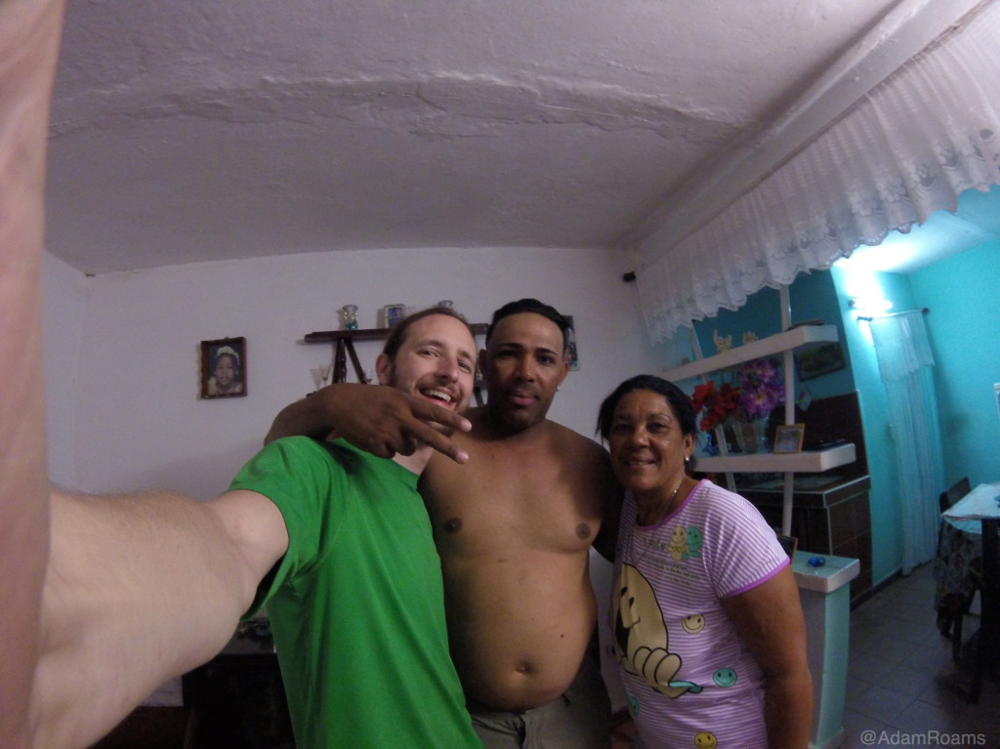
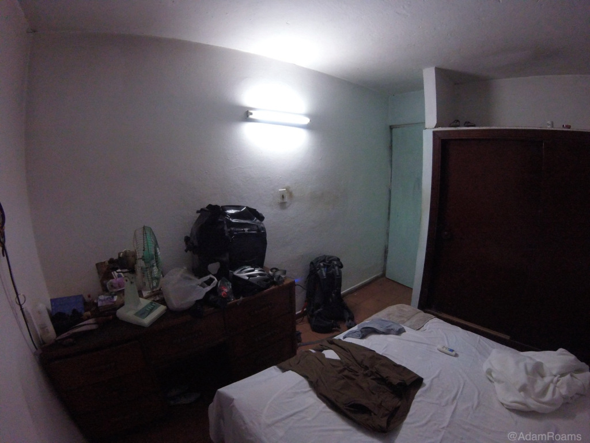
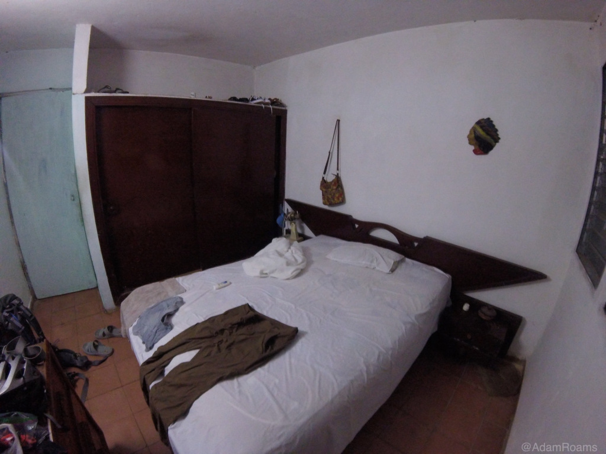
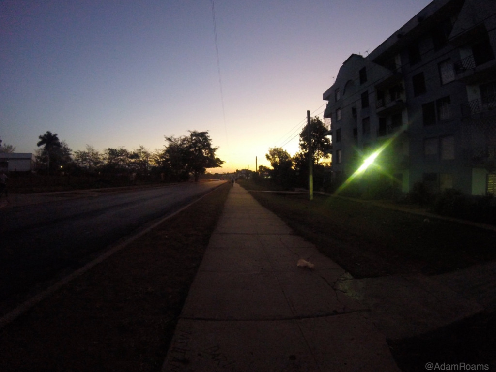
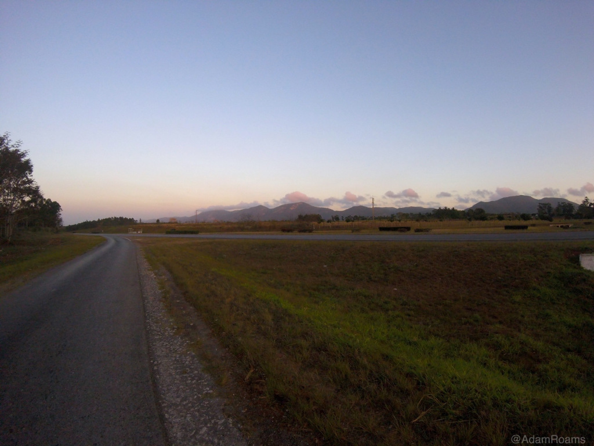
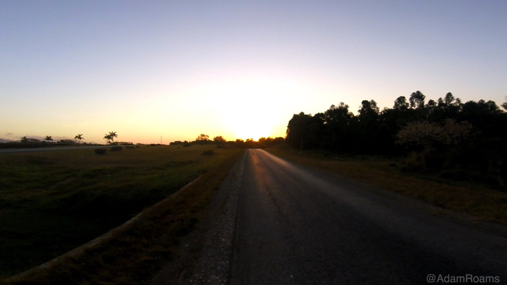
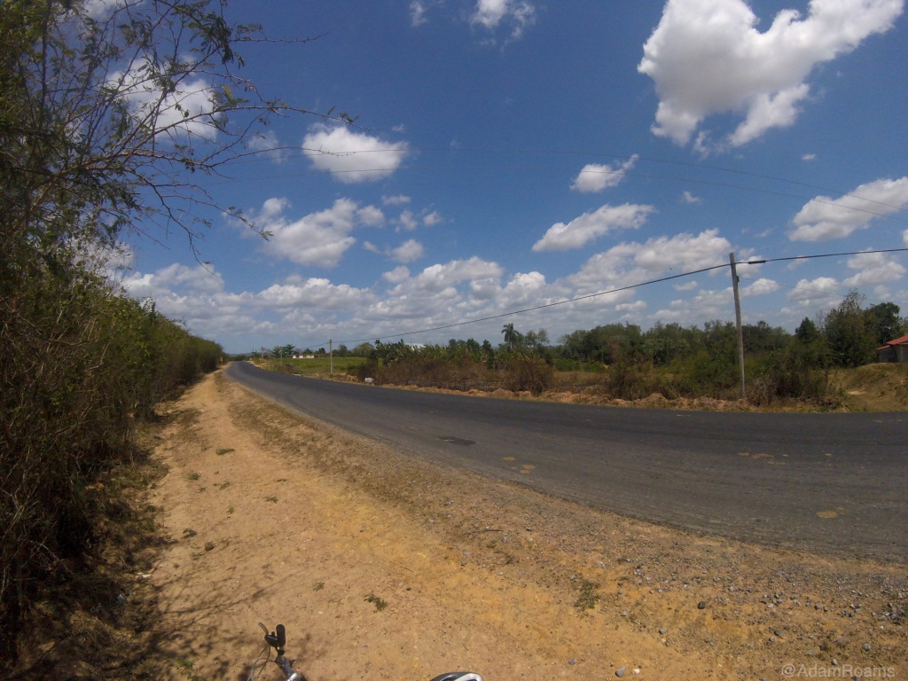
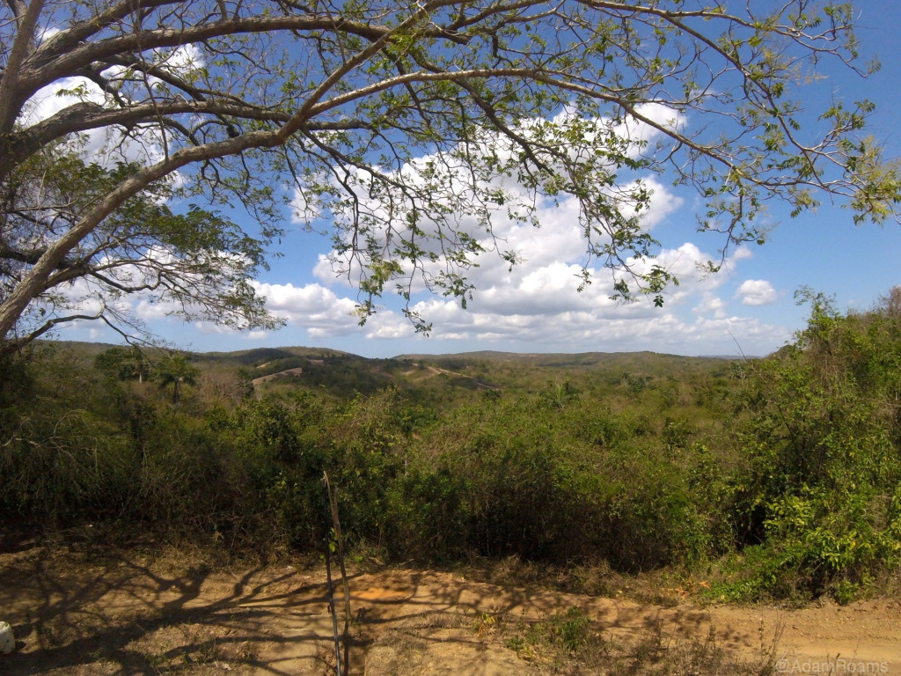

The Road to Viñales - A Tale of Cycling in Cuba - Part 2

Author’s Note: This story was written on a blog that I began along with my travels a few years ago. The trip greatly fueled my desire to travel which eventually led to living as an expat. For both sentimental and archival purposes, I decided to include this story as the first set of posts on my new site. I hope you enjoy it. 🙂
Spending the Night in a Casa Particular (Or Maybe Just an Apartment)
I stopped at around 7 PM that first night to search for a place to stay. With the hammock and sleeping bag stuffed deep inside my pack I had dreamed of camping in the countryside and experiencing a night under the stars in Cuba. Sadly, that dream was crushed by the sheer amount of private farmland that bordered the highway for the entire ride, and I didn’t want to get in trouble for camping on private land or government property.
Eventually, I came to a little town off the autopista called Paso Real de San Diego where I found groups of relaxed locals loitering alongside the highway enjoying the cool evening air. It was here that I decided to look for a ‘casa particular’ (private home) to stay in as was common for tourists to do. All of Cuba knew that housing travelers could make them a whole lot more money than their usual jobs, and it wasn’t difficult to find someone who would help me out.
Approaching two young men sitting on a bench, I asked if there were any casas particulares available in the town. They exchanged a few quick words with each other, and one of them stood up and ushered me to follow him. As we walked down the side of the road together I got a feel for the place, perhaps the Cuban equivalent of a ‘suburb’ compared to Havana. I wasn’t sure if such a thing as a suburb even existed in this country, but the place felt like a more contained civilization rather than a satellite of a large city. I suppose that made sense since I had ridden about 80 miles away from Havana that day.
We walked from door to door, and my guide asked about a room for the night at every place we stopped. The matrons that appeared all followed the same routine. ‘Let me go check,’ they would say. They would disappear for a moment and return only to say, ‘Sorry, we’re full tonight.’ How many other travelers were coming through this little town? Or were the locals perhaps hosting other Cubans? I wasn’t sure, but this frequent occurrence was rather disheartening as it kept happening at every home where we stopped.
My guide paused for a moment, looked up at the sky thoughtfully, and asked, ’Do you want to stay with me in my apartment tonight? Only 30 CUC for the night.’ And then it hit me - I was being hustled. Surely this was a script my guide had followed more than once before, and perhaps the women along the way had been a part of his charade. I had been led through what appeared to be a town full of ‘taken’ rooms in order to make it seem like staying at this man’s apartment was my only option. The high price of 30 CUC was a dead giveaway - only a tourist could afford that.
Under normal circumstances, it would have been a bad deal, but we both knew I didn’t have any other options. Begrudgingly, I agreed to follow him to his home. I was a little salty about the way I had been treated, especially since I didn’t have as much spending money as people seemed to think. I had thought that getting out of Havana would mean distancing myself from the constant stream of grifters preying on tourists who don’t know any better, but here I was far outside the city, and I was still a target for the locals. It was frustrating.
However, much of my annoyance wore off as I brought my things into the apartment and settled in. They lived on the second floor of a large complex, and as they ushered me in with smiles and hugs I couldn’t help but be swayed by the universal Cuban charm that I had witnessed many times on my trip already. These people were thrilled to have a visitor, and after the initial greetings, questions about my trip, and obligatory group photos were out of the way, their focus turned completely to hospitality. In mere minutes I had gone from cash-laden tourist to honored guest for the evening, and I knew I was as welcome in their home as family.
I was hungry, tired, and absolutely disgusting from my day in the sun. The mother of the house practically forced me to take her bedroom for the night, and while I unloaded my bags she prepared a bath for me - a bucket of boiled water and a bar of soap waiting for me in a half bathroom whose door always remained halfway open. I chuckled to myself at the spartan nature of things. This was definitely the adventure I had asked for.
 After washing the grime from my body I sat down to a homemade dinner of various small dishes spread around the kitchen table. There was a surprising amount, and I was worried I might be eating all the food in their fridge. But as with everything else, I accepted that it was being offered to me as their guest, and I was pretty sure they could recoup the lost food with only a fraction of the sum I had paid them for the night. They would be okay.
Filled to the brim with wonderful Cuban food, I headed straight to bed. I never quite know how tired I am until I have a full stomach, and after eating I quickly found out how much energy I had spent on the ride that day. My eyelids were heavy with sleep, and it came upon me so fast that I barely remember spending any time in the bedroom that evening. Perhaps it was for the better. I still had another day of riding before I would make it to Viñales, and it was only going to get harder as I approached my goal.
Day 2 - A Long Morning on the Autopista
Before dawn had come, my host was knocking gently on the door to my room to see if I was awake. I sat up slowly to let the sleep spill off my aching body, and I began to dress and prepare for the day. I had really only packed 2 sets of clothing, so I donned the outfit from the day before to avoid dirtying more clothes than necessary. In the dim light of the room I gathered my bags with the help of my new friend, and we made our way downstairs.
Gear secured and pack on my back, I followed my guide through a pre-dawn Paso Real de San Diego. The town was buzzing in the dark, adults headed to their jobs and children on their way to school. The students were dressed in matching uniforms and lined up elementary school fashion along building walls as they waited for their buses to arrive. They stared in awe as I walked past, a strange gringo with so many packs and on a bike headed for… where? It seemed I was their bit of intrigue for the morning, and I smiled at all of them as they watched me saunter drowsily through the town.
It was surreal to see the familiar patterns these people created as their daily lives unfolded, and I felt much like a ghost sneaking through the gaps between their motion. I hadn’t existed in their world the day before, and I wouldn’t exist in it tomorrow. It was only for this brief moment in time that our paths intersected.
Upon reaching a main street on the edge of town, I received directions and a fond farewell from my host. Walking down the busy road, I found the autopista just as the sun rose over Cuba that morning and began the second day of my ride to Viñales.
 It was a much harder morning than I had anticipated. Mostly, my ass hurt. I guess my bike seat hadn’t been meant for long distance rides, but since I had never done anything like this before it hadn’t occurred to me to look into it. My solution was to wrap my sweater around the seat and create a thicker, wider cushion for my bony butt to sink into during the ride.
The improvised sweater pad was nice, but the truth was that I was in pain. I was sore, my thighs were weak from the day before, and my back and shoulders were starting to feel the constant weight of my 20 pound pack. Though I was making progress at much the same speed, the ride was starting to feel a bit like a slog, and my view of the endless highway began to take a toll on my mental state. I knew I still had a long way to go, so I broke the ride into small distances to help maintain my focus. I’d ride 10 miles and do a quick status check on myself, and after that I’d ride another 10 miles and repeat. The routine was working, and I stuck with it.
But I was also running out of water. Cuba is not a place where you want that to happen, and pretty early in the day I had sucked my Camelbak dry for the second time on the ride. I only had two bottles left now. At the rate I was drinking I knew I would need more, but finding bottled water in Cuba is no simple task, especially in the countryside far from anywhere tourists might be looking for it. I decided it was better to search for it now before I truly needed it.
I stopped at every spot along the autopista to ask where I could find some agua. Even a place that seemed to be a truck stop had none on hand, and I rode on to search the next town. Everyone I asked directed me somewhere different, and bottled water remained elusive in the heat. I knew that continuing this wild goose chase could lead me pretty far off my intended path, and I didn’t want to add any unnecessary miles to my trip. My search would go on, but it would have to be in the direction of Viñales.
Worried about my resources, I thought about rationing my water and took only the smallest sips at regular intervals. Thankfully, I didn’t need to do this for long. As I continued along the autopista I came across what was perhaps the strangest rest stop I’ve encountered in my travels so far. Sitting literally on the edge of the highway was a beautiful little restaurant seemingly waiting for me to arrive. There was a patio with tables and chairs, a back area with an outdoor grill, a classic clay shingle roof, healthy green vines and plants growing everywhere around it, and even a little window with a lovely Cuban woman behind it asking me if she could get me anything.
It was a place right out of a dream! And what made it so strange was that there was absolutely nothing else around it. There were no other buildings, no other people, no cars parked, nothing - just low farms as far as the eye could see, and I began to wonder what this place was doing there in the middle of nowhere. I was the only customer, and it didn’t seem like anyone would join me anytime soon. How I wish I could have eaten dinner there under the stars that night. Instead, I ordered two small bottles of water, and I drank a whole one before I even got back on my bike. Resuming the 10-mile routine I had begun earlier, I pushed on toward the horizon.
My excitement mounted when I found the off ramp pointing to Viñales. I was almost there! In 20 miles I would be at my final destination, and my journey would be a success. Leaving the autopista, I encountered again the gravel and hard dirt roads of the Cuban countryside. This time I was happy for them. The curvy, pockmarked road to Viñales was a nice change of pace from the monotony of the highway, and I was starting to encounter more people along the way. Shouts filled the air as I passed by the locals.
’¿Casa particular, Señor?’
‘¡No, gracias!’
‘¿A dónde vas?’ (Where are you going?)
‘¡A Viñales!’
‘¡Está muy lejo!’ (It’s really far!)
How far I had already ridden! If they had known I started in Havana, would they still have tried to warn me about the distance? Or would they think me crazy like all the others? From where I sat, another few miles didn’t seem like so much to go compared to the great distance I had traveled in a day and a half. I was riding high in my seat and pushing on toward Viñales, and I was ready for my destination to finally reveal itself. It was just around the corner!
Except for that damn mountain.
Concluded in Part 3!